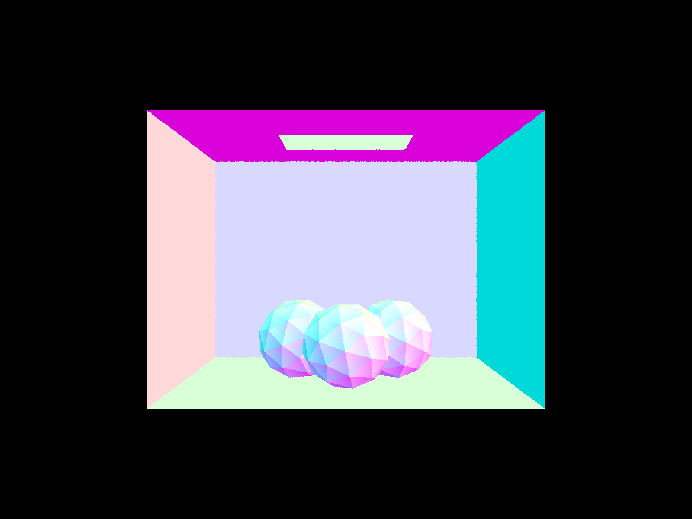
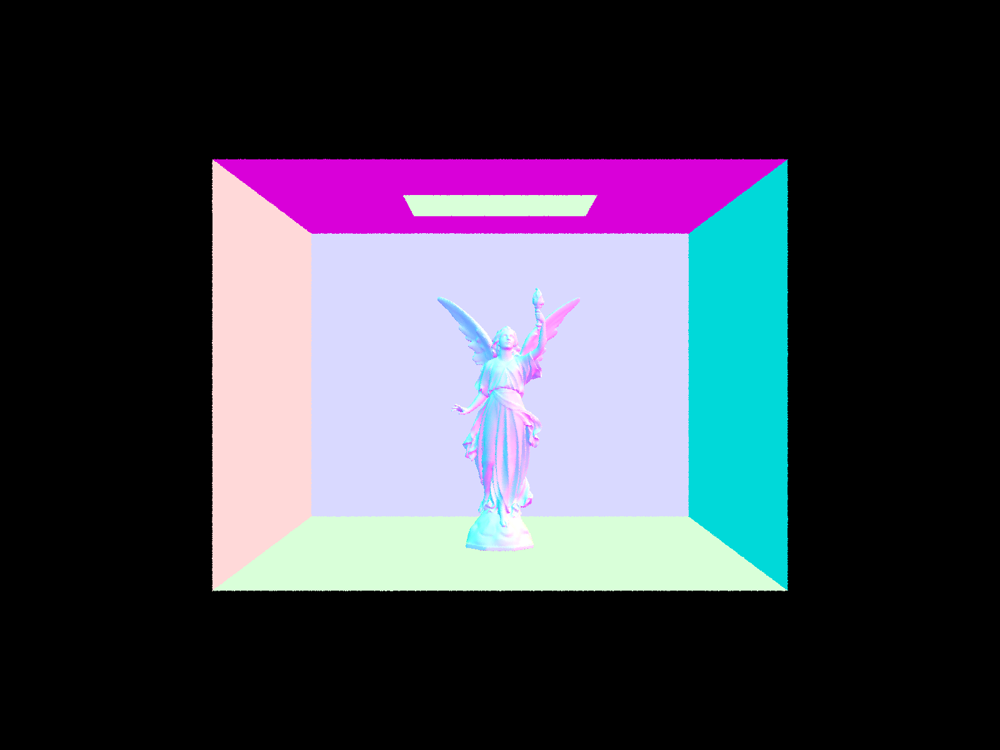
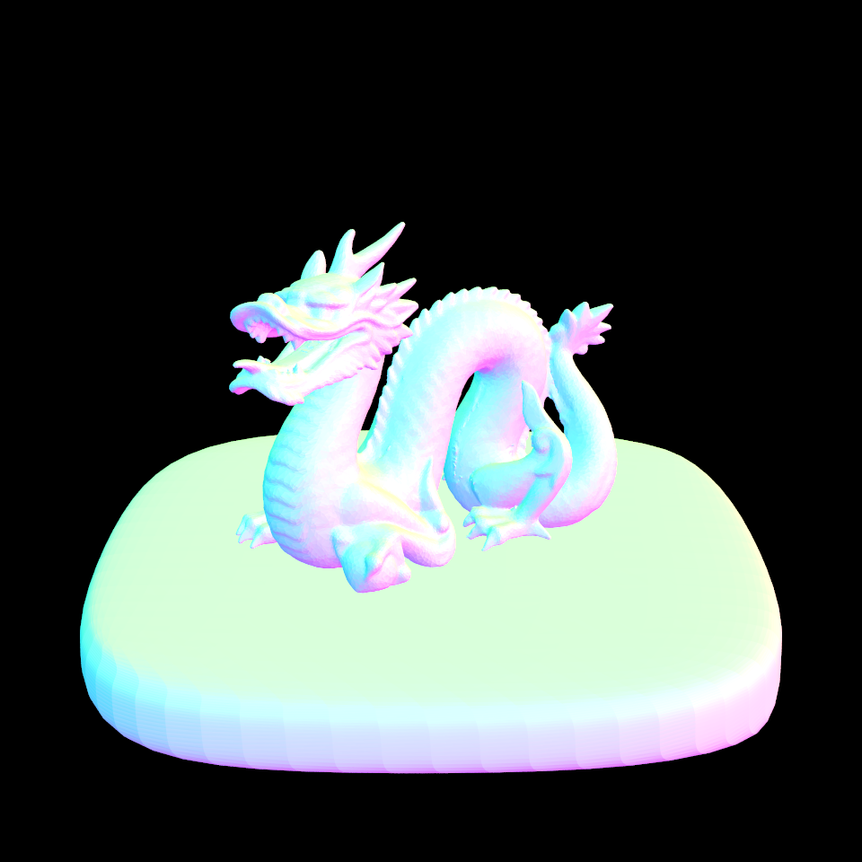
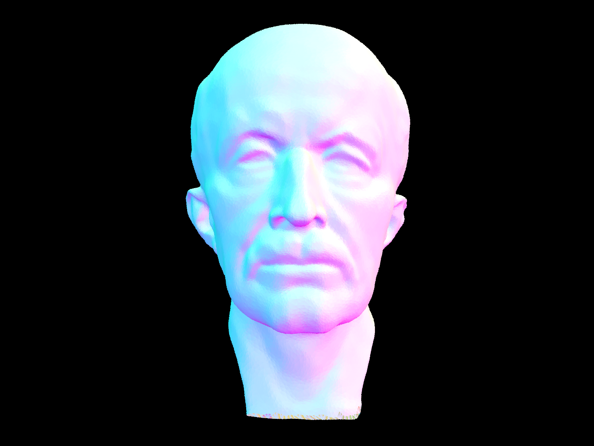

CS184/284A Spring 2025 Homework 3 Write-Up
Link to webpage: github.com/cal-cs184-student/hw-webpages-kate-trevor-1
Link to GitHub repository: github.com/cal-cs184-student/sp25-hw3-guppies

Overview
The main focus of the assignment was to implement key ray tracing concepts, such as ray generation, scene intersection, and shading. We also implemented acceleration structures, such as Bounding Volume Hierarchies (BVH), to improve rendering performance. The later parts of the assignment focused on direct and global illumination techniques for creating more realistic images and adaptive sampling to reduce noise.Overall, this project was a valuable learning experience and helped us gain a deeper appreciation for ray tracing concepts introduced in class as well as animated films and video games that utilize these techniques. Though we faced significant challenges with implementing all the tasks in a timely manner, we hope to build upon our work in the future.
Part 1: Ray Generation and Scene Intersection
To generate rays, we needed to convert the provided the normalized x and y coordinates from image space into camera space to generate the ray and finally, into world space. The provided vFov and hFov are in degrees, so we began by converting it into radians, multiplying it by 0.5, and taking the 2*tangent of this value. Afterwards, we multiplied 2* tan(radians(hFov)*0.5) by (x-0.5) and 2* tan(radians(vFov)*0.5) by (y-0.5) to get the x and y coordinates in camera space. Since the camera space has a different coordinate system, we can pass in our camera space x and y coordinates into a Vector3D alongside -1 for the Z coordinate to create our ray direction. We then transformed this ray into world space by multiplying the ray by the cameraToWorld matrix (c2w) and normalize it. The world_space_ray can then be created by passing in the origin and direction of the ray. We then assign the min_t and max_t of the created Ray to nclip and fclip respectively.
When generating pixel samples, we looped through number of samples times to generate the specified number of rays. Inside of each iteration, we would generate a random sample using gridSampler->get_sample() and define the current x/y values by adding the sample's x and y values to the current pixel's x and y values. We then divide the current x and y values by the width and height of the sample buffer. The current ray can be created using camera's generate_ray function with the current x and y values as the input and by setting the ray's depth to the max ray depth. The result of
calling est_radiance_global_illumination(Ray r) to estimate the scene radiance along the curr_ray and then incorporate it into the Monte Carlo estimate of the Vector3D value of the pixel is added to an average variable. Once the loop is completed, we divide the average by the number of samples to get the final pixel value (updated in the respective sample buffer location).
In order to determine if a ray (within the boundaries of the t values) and a triangle intersect and to determine the values for that intersection we can use the Möller Trumbore Algorithm. Assuming a ray is of infinite length, the algorithm gives us the barycentric coordinates of the intersection of the ray with the plane the triangle is on. There are two checks we need to perform to determine if there is an intersection for this particular function. First, that the point of intersection actually lies within the bounds of the triangle which we can do by checking that the barycentric coordinates are all between 0 and 1. Second, we need to make sure that the value of t at the intersection falls within min_t and max_t of the input ray. For ray intersection of a sphere, we used the formulas given in lecture 9/10 similarly, making sure that the t value at the points of intersection fall within our given range. For the sphere, we can have 0-2 points of intersection since the equation we solve to determine the points is a quadratic.
Some images with normal shading
|

|

|
Part 2: Bounding Volume Hierarchy
To construct a Bounding Volume Hierarchy (BVH), we began by defining two BBox variables, one to represent the overall bbox, and another to represent the centroid of each bbox. In order to build the initial BBox, we looped through the scene's primitives and expanded the bbox to include the bounding box of each primitive. We then calculated the centroid of the bbox and expanded thecentroid_box variable accordingly. The latter will be used for our heuristic, which determines the split point based upon the axes that has the greatest spread of centroids (determined by checking the extent of the centroid_box). Afterwards, we created a new BVHNode with the constructed bbox. If we reached a list of primitives that was no more than max_leaf_size, we have hit a leaf and would update the node's start and end values accordingly. Recursively, we would then split the primitives into two groups based on the split point and reassign the original primitives listing based on the split_point. In the case that either of the groups was empty after splitting, we would add the first value of the other group into the empty one and delete it from it's original list.
For debugging the BBox intersection implementation, we briefly explored the use of LLMs for debugging and found it useful for catching smaller errors such as using x rather than z when calculating tz_min and tz_max.
Below are some large .dae files that were rendered with BVH acceleration.
|

|

|

|
With the BVH acceleration structure, we were able to render the following files with significant speedup. For example, the blucy.dae took 0.3200s with BVH acceleration while it took 1138.0018s without the acceleration. Similarly, the dragon.dae took 5.7334s with BVH acceleration and over 10 minutes without and the MaxPlanck.dae took 0.2849s with BVH acceleration and 33.8243s without.
Part 3: Direct Illumination
Direct lighting with Uniform Hemisphere Sampling: for uniform hemisphere sampling, for each ray casted we want to calculate how much light is reflected back to the camera at the point of intersection. We can estimate amount of light that arrived at the intersection point using Monte Carlo Integration Direct lighting by Importance Sampling Lights: for this kind of direct light it was important to iterate through all the scene lights and checking is_delta_light to check the light source.Part 4: Global Illumination
For our indirect lighting function, we updated ourest_radiance_global_illumination as well as at_least_one_bounce_radiance to return one bounce radiance and recursively call additional bounces. To account for this, we used the coin flip method with the probability of 0.65 for returning true. If true was returned, the ray depth was less than 1, cos_theta was greater than 2, and there was a bvh intersection between the ray and an Intersection, &isect2, we would recursively call the at_least_one_bounce_radiance method and multiplied the result by sample_f(stored as f) and cos_theta before dividing it by the pdf and coin flip probability. This final result was appended onto L_out. This would allow us to account for Russian Roulette (random termination). Within sample_f, we randomly sampled the incoming ray direction and set the resulting direction/probability to wi and pdf respectively. We also updated the est_radiance_global_illumination method to call the at_least_one_bounce_radiance method and return the total radiance.